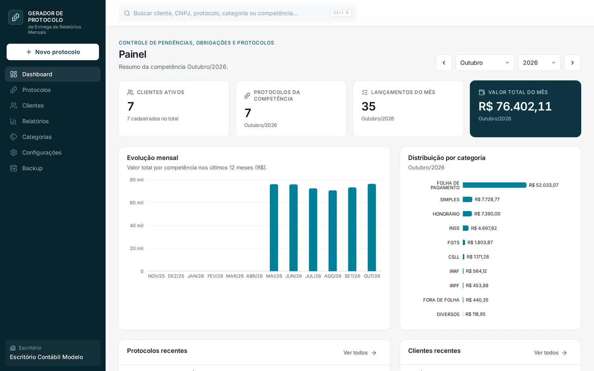
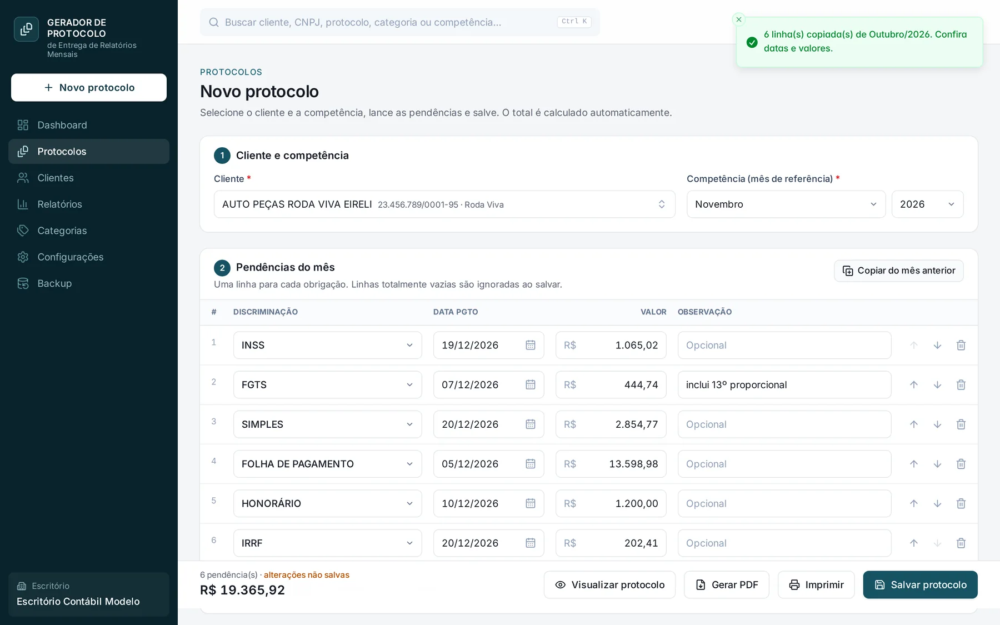
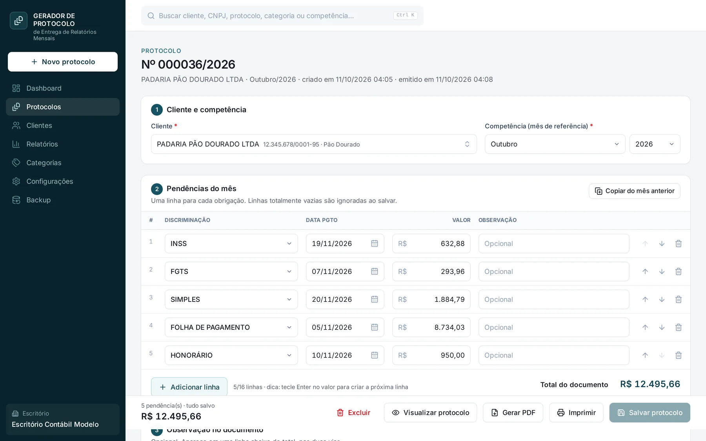
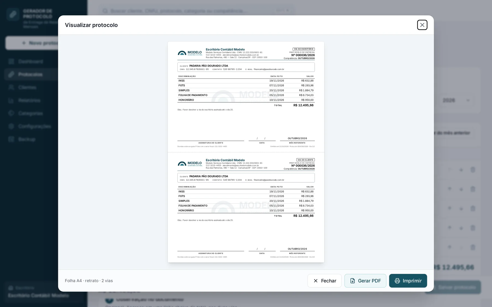
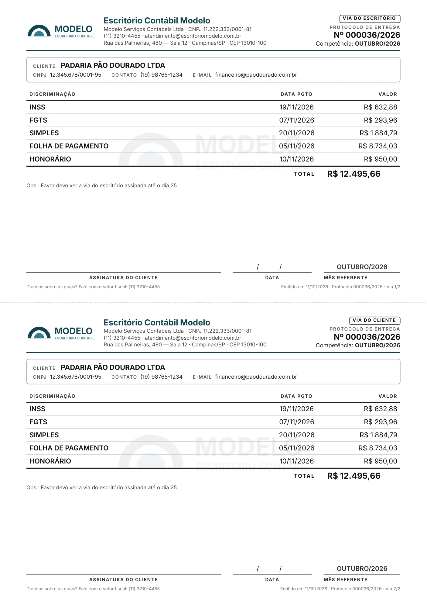
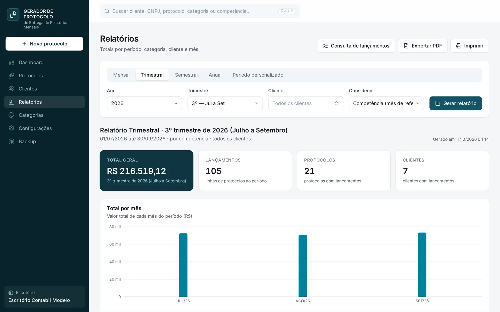
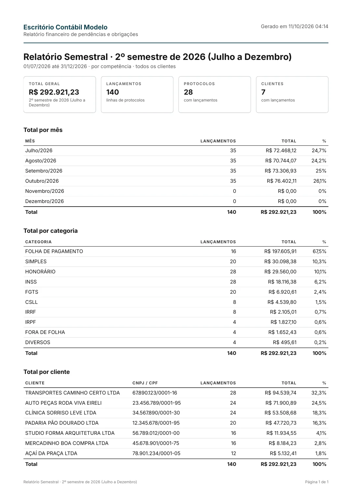
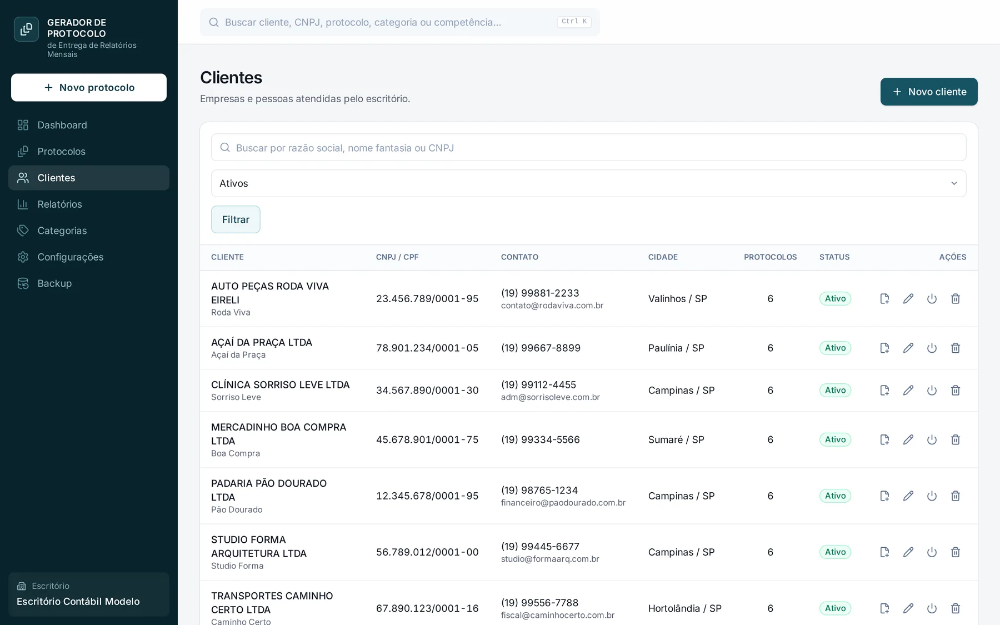

Gerador de Protocolos
Um programa de Windows que transforma o fechamento do mês de um escritório contábil em três passos: escolher o cliente, lançar as guias e salvar. O protocolo de entrega sai pronto em PDF, em duas vias, já arquivado na pasta do cliente.
- Para quem
- Escritórios de contabilidade
- Plataforma
- Windows, sem internet
- Entrega
- Instalador .exe de um clique

Todo mês, a mesma papelada montada à mão
No fim de cada mês o escritório entrega a cada cliente as guias a pagar: INSS, FGTS, Simples, folha, honorário. Cada entrega precisa de um protocolo assinado, que comprova o que foi entregue, com valores e vencimentos.
Esse protocolo era montado num editor de texto, copiado do mês anterior e somado na calculadora. A numeração dependia da memória de quem digitava, e encontrar o protocolo de um cliente de três meses atrás significava procurar em pastas soltas.
Antes
- Documento copiado e editado para cada cliente
- Total somado à parte, sujeito a erro
- Numeração controlada manualmente
- Arquivos espalhados, sem histórico
Depois
- Itens copiados do mês anterior com as datas já avançadas
- Total calculado pelo sistema, em centavos exatos
- Numeração automática que nunca se repete
- PDF salvo na pasta de cada cliente, por ano
O que o escritório ganhou
Salvar o protocolo gera o PDF, arquiva na pasta do cliente e abre a impressão.
Via do escritório e via do cliente na mesma página A4, prontas para assinar.
Relatórios mensal, trimestral, semestral, anual ou por datas, exportáveis em PDF.
Tudo fica no computador. O backup leva os dados para outra máquina em um arquivo.
Do lançamento à impressão
Escolher o cliente e o mês
A busca aceita nome ou CNPJ. Com um clique, as guias do mês anterior entram na lista com os vencimentos já ajustados para o novo mês. Só falta conferir os valores.

Lançar e revisar as guias
Cada linha tem categoria, vencimento, valor e observação. O total é recalculado a cada alteração e um mesmo cliente não pode ter dois protocolos na mesma competência.

Salvar, e o PDF já está pronto
Ao salvar, o programa grava o PDF na pasta do cliente, mostra a prévia e abre a impressão. Se o protocolo for editado depois, o PDF é atualizado sozinho.

Um documento feito para ser assinado
O protocolo é o que o cliente vê. Ele foi desenhado como um documento formal: legível impresso em preto e branco, sempre em uma única página, mesmo com 16 linhas e textos no tamanho máximo.

1 2 3 4 5- 1
Identidade do escritório
Logotipo, razão social, CNPJ e contato distribuídos em linhas que nunca cortam o e-mail ou o telefone.
- 2
Via e numeração
Cada via é identificada. O número segue a sequência do ano e nunca é reaproveitado, nem depois de uma exclusão.
- 3
Marca d'água configurável
Logotipo ou texto, com posição, tamanho e opacidade ajustáveis, discreta o bastante para não atrapalhar a leitura.
- 4
Assinatura e data
Espaço para o cliente assinar e datar o recebimento na via do escritório.
- 5
Linha de corte
As duas vias são idênticas e separadas por uma linha tracejada. O arquivo recebe um nome legível, como PROTOCOLO_PADARIA_PAO_DOURADO_OUTUBRO_2026.pdf
Relatórios, clientes e configuração



Como foi construído
O pedido era um programa de verdade: instalar com dois cliques, abrir numa janela própria e funcionar sem internet, num único computador. A interface é web por dentro, empacotada como aplicativo de desktop.
Interface
Next.js 15 e React 19 com TypeScript e Tailwind. Validação de formulários com zod e gráficos com Recharts.
Aplicativo Windows
Electron com instalador NSIS em português. O servidor interno roda escondido, só no endereço local, sem janela de terminal.
Dados
SQLite com Prisma, num único arquivo em %APPDATA%. Migrações aplicadas sozinhas ao abrir e backup automático diário.
Documentos
PDF gerado com @react-pdf/renderer e impressão nativa em A4 sem margens. As fontes vão embutidas para o PDF sair igual em qualquer máquina.
Dinheiro sem arredondamento
Valores guardados em centavos inteiros. Totais sempre recalculados a partir dos itens, nunca digitados.
Portabilidade
Exportar e restaurar backup em um arquivo JSON. Desinstalar ou atualizar o programa não apaga os dados.